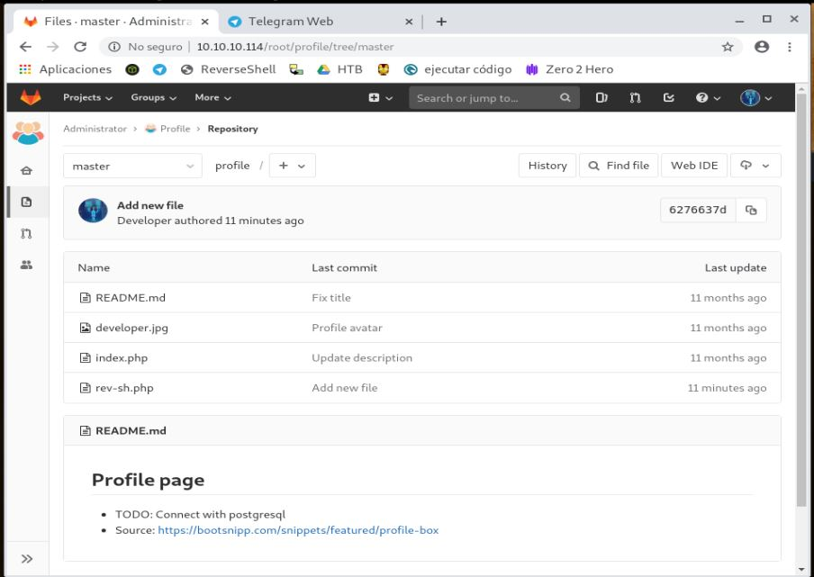

HTB Máquina Bitlab
angussMoody
- Sistema: Linux
- Puntuación: 3.8
- Categoría: Medio
• Usuario:
Despues de realizar el escaneo de puertos nos encontramos que tiene un servicio http corriendo en la máquina
y después de analizar un poco la página ingresamos a la dirección http://10.10.10.114/gitlab/
esto nos redirige al directorio clave que puede ser un usuario que nos pueda servir más adelante
Nos dirigimos al directorio help, donde encontramos un link llamado bookmarks.html, nos dirigirnos a este link el cual nos da muchas pistas en los links relacionados, entre ellos, la página principal de Node.js
pero solo hay uno que no nos lleva a una página, revisando el código de la página vemos que este tiene un archivo javascript y por lo que podemos ver es algo escrito en hexadecimal
vamos a ver que nos dice este código, y no es nada más y nada menos que la confirmación del usuario que vimos anterior mente y un password, con esto ya tendíamos acceso.
Al entrar al sistema, nos encontramos con unos repositorios y nos llama mucho la atención que han sido modificados hace solo unos minutos, así que vemos uno llamado rev-sh.php entramos a ver este archivo y lo modificamos un poco para hacerlo correr

hacemos una prueba, realizando un echo, para saber si estos archivos están corriendo
nos damos cuenta que el código que pongamos en estos archivos corre así que lo próximo es subir nuestra reverse Shell para ver si nos podemos conectar por medio de netcat
Subimos nuestra Shell, y ponemos nuestra máquina a la escucha, para este caso lo hacemos en el puerto 9999


Y al correr nuestro código tenemos acceso, realizamos el procedimiento que hemos realizado anteriormente con Python, para tener una Shell más amigable.
Vamos a nuestro usuario para capturar la primera bandera, pero vemos que no tenemos permisos para leer este archivo, además vemos un ejecutable que nos llama la atención, RemoteConnection.exe
Hasta este punto, no sabíamos bien que debemos hacer, ya que no tenemos permisos necesarios, entonces ya que podemos correr código, tal vez podamos ingresar a la base de datos y sacar las credenciales necesarias para obtener permisos de usuario
Y con este código encontramos unas credenciales con un password al parecer en base64
Al pasarlo a texto nos da una password que al parecer es de ssh, así que vamos a intentar conectarnos por medio de ssh con el usuario que ya conocemos, pero no tenemos suerte con este password
intentamos con el password en base64
Y de esta manera obtenemos nuestra primer flag.
• Escalada de Privilegios:
La escalada de privilegios no fue tan difícil como otras máquinas que hemos visto, ya que desde el principio de la máquina nos dieron un archivo para analizar, después de analizar el código un poco, leer un poco y pensar un poco, corrimos el RemoteConnerion.exe con la herramienta OllyDbg.
De entrada, vemos algo que nos llama la atención y es nuestro usuario
Así que vamos a darle en Breakpoint y luego en Run to selection
Nos arroja unos datos interesante que debemos pasar a leer
y al parecer nos encontramos con las credenciales del usuario root
ahora vamos a iniciar sesión por medio de ssh como hicimos con el usuario clave
De esta manera encontramos la flag del Root.
Saludos Fr13ndS HTB